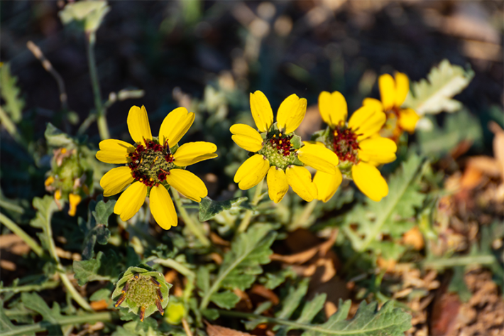

In the late spring, the desert smells like chocolate. It’s fleeting, and it isn’t everywhere in New Mexico, but sometimes, walking in the scrubland, it suddenly hits: a sweetness shimmering through the air. At first, I didn’t know how to read this olfactory information, but now I can look for the source: yellow-petaled flowers with dark centers—chocolate daisies—blooming in the sun.
The American Southwest smells unlike anywhere I’ve lived before. It’s better than the woods of Maine; it’s far more fragrant. I didn’t expect that when I moved here. I’m a perfume collector, so I had smelled the desert through art before I smelled it in person. Through my experience sampling “Mojave Ghost,” “Arizona,” and “Desert Eden”—perfumes designed to evoke cactus flowers and conifers—I thought the mesas would smell dusty and musky, with a little green cypress thrown in. I was wrong.
Nautilus premium members can listen to this story, ad-free.
Nautilus members can listen to this story.
Here, the plants hold their essences close to the stem out of necessity, only letting their oils free when it’s safe to do so, when they’re ready to be fertile. Here, the sand bakes under the sun and the fragile soil releases its secrets with each step. Here, even my dog’s urine is more potent, more fragrant on the wind, a louder yellow than I ever witnessed during our walks in Maine, blending uneasily with the grey rabbitbrush. It’s wetter and stranger than I ever anticipated—complex, elusive, fecund.
After a year in Santa Fe, I’ve finally started to scratch the surface of knowing this landscape. But the learning is slow and requires all my senses, including the one most often forgotten, what Hellen Keller called the “fallen angel” of the body. Unable to see or hear, smell became her primary way of reading the wider world; she lamented how that “most important” sense had been “neglected and disparaged” by the general populace, though she found it hard to communicate this knowledge to others. “It is difficult to put into words the thing itself,” she wrote. “There seems to be no adequate vocabulary of smells, and I must fall back on approximate phrase and metaphor.”
Sniffing, searching, naming: These actions enable us to more thoughtfully engage with our environment.
Perhaps due to our trouble translating scents into language, it was once common wisdom that human noses were weak, shoddy things compared to our animal friends. Time and research has challenged that paradigm. Although we don’t have the smart wet noses of dogs or the large nasal chambers of reptiles, humans can discriminate between an estimated 1 trillion different odors; the myth of our poor olfaction is rooted in the Victorian distaste for all things scented and the Puritanical eschewing of all things bodily. In other eras people assumed that odd smells were evidence of impending illness, ghostly presences, or moral failings, rather than taking them for what they were.
We’ve also numbed our noses into oblivion, dulling our most primal sense with the overwhelming presence of synthetic musks and so-called “clean” compounds, used to scent everything from candies to detergents. So when I go outside and try to smell the air, identify the plant, find the source of aromatic joy, I’m engaging in an uphill battle, fighting both my culture and my exhausted, chemical-addled olfactory bulbs.
Yet it’s a wildly worthwhile thing, to immerse oneself in a landscape, and savoring the scents of place is a crucial element of this process. “Olfactory scientists have considered smell to be largely the purview of the unconscious, but by putting a smell into words we bring it into consciousness,” explains Asifa Majid, a cognitive scientist at the University of Oxford who studies both language and olfaction. Sniffing, searching, naming: These actions enable us to more thoughtfully engage with our environment.
Smell can also ground us in our bodies—my therapist uses scent as a part of our meditative practice—and tie our consciousness to place and time, rather than letting it swirl wildly around the contortions of future-thought. I relish my olfactory abilities because they help me feel embodied, reminding me that I am also a part of the world.

DESERT CANDY: Blooming chocolate daisies, more lyrically known as lyreleaf greeneyes, are part of Southwestern smellscapes from spring to fall. Photo by G B Hart / Shutterstock.
“We are constantly taking a read of our environment and synching,” says artist and theorist Gayil Nalls,* founder of the World Sensorium Conservatory, a repository of “culturally important” botanical scents. Just as we constantly take in information from our eyes and ears, both consciously and unconsciously, we’re also receiving olfactory detail. “It is a big, important way that we understand our environment,” Nalls says.
On New Year’s Eve, 1999, Nalls debuted an “olfactory sculpture” to millions of people in Times Square. This scent was composed from iconic plants from every nation; for America, Nalls chose pine. After speaking to Nalls, I went for a walk through the scrubby forests at the foot of the Sangre de Cristo Mountains on the Atalaya trails. Almost immediately upon entering the woods, I found myself leaning into trunks, sniffing at the bark of a ponderosa pine.
It was a hot day, and it smelled warm, resinous, homey, and alive. Even in that small patch of forest, each tree—piñons and junipers, bristlecone pines, and cypress—smelled distinctive, each plant had its own olfactory fingerprint, and together they created a complex and resonant symphony of a very particular smellscape. The more I sniffed at bark, the more confused I became. What did pine even smell like, anyway? It was only when I stepped back that the forest came into view. Iconic and piney, certainly, but also so much more.
I could list each note that sung with the pine, laying it out beat by beat. That’s how perfume companies do it: They give you the top, middle, and base notes. Sometimes this information is provided right on the packaging, though one still must sniff the nozzle to understand how they all come together. Language can only offer a loose approximation of a perfume, and a perfume can only offer a loose approximation of a natural smellscape.
The airy scent that follows rain is known as petrichor, and there are many forms. The petrichor in Singapore, for example, will be quite different from that of Reykjavik. The desert smells most intensely after a sudden summer downpour, when the plants release their oils, when the soil opens its pores to the sky. Nevertheless, perfumers have identified a common essence to petrichor: the chemical compound geosmin. It takes its name from the Greek words for “earth” and “smell.” In small amounts—and we are able to detect very small amounts of geosmin, down to 10 parts per trillion, akin to a stick of incense diffused through the entire Empire State Building—it smells familiar and musty, a little minerally, a little dirty, but in a nice way. In larger doses, it can come across mildewy and rank, like dirty laundry left in a damp basement. In nature, geosmin is produced by certain species of blue-green algae that live within soil, and is part of the fragrance bouquet that gets released into the air before, during, and after the high desert gets hit by rain.
For perfumers, the discovery and naming of geosmin in the 1960s was a boon, although it did take several more years to perfect the lab-synthesized version of the compound. It can be used in perfumery to add a muddy, petrichor scent to the bouquet. Since most fragrance houses don’t release a list of their chemical compounds, it’s not always easy to know when you’re smelling geosmin, but if you’re looking for a desert-inspired smellscape, there’s a good chance that synthetic petrichor will be part of the mix.
"We underestimate the human sense of smell, but we notice it a great deal when it is gone.”
Indie perfume house Solstice Scents makes a botanical, woodsy scent called “Desert Thunderstorm,” which features sage, pinon resin, sweetgrass, creosote brush, sand, and petrichor among its notes. Another atmospheric perfume, “Two cups of tea, a summer monsoon, and me and you” by Death and Floral, also relies heavily on petrichor to ground it in place. Both can veer mildewy if worn too heavily. That’s the risk of geosmin thanks to our remarkable sensitivity to this compound.
But there are other ways to get a rainy desert scent, according to Cebastien Rose and Robin Moore, perfumers at the Albuquerque-based company Drylands Wilds. Unlike most perfumers, they don’t use synthetic odor molecules; their ingredients are derived from locally foraged plants, and through their work, they’ve become experts in the various scentscapes of New Mexico. Including greasewood, which is often considered a pest plant, a garbage scrub that needs getting rid of but is also responsible for an earthy, fresh Southwestern scent that wafts from its leaves. “Right before it rains,” explains Rose, “it opens all its stomata.” These “tiny mouths” are how the plant breathes, and as the rain begins to fall, the leaves release aromatic organic compounds called cresols, which smell a bit like coal tar and—thanks in part to their association with rainfall—a lot like a drenched desert.
“We’re obsessed with trying to capture that exact experience of being out here, walking the hills, smelling the piñon resin when it gets hot, smelling the ponderosa bark that wafts the air with vanilla,” Rose says. But it’s not enough to simply extract oils from the bark. It’s even difficult to capture a single tree in perfume form, says Rose. Plus, that wouldn’t reflect the experience of walking under the “giant, orange-barked trees. You wouldn’t get the oak moss, the soil, the place.” That, explains Rose, is where the “art of perfumery” comes in. The Dryland Wilds ponderosa perfume has yellow nutsedge, sweet clover, piñon, oakmoss, fir, and ponderosa. It contains extracts that mimic the dirt, resulting in a liquid that smells like a tree, yes, but is also intended to smell like a moment—a dry summer afternoon on the Atalaya trails, for instance. “We’ve had people cry after smelling it,” adds Moore. “One woman had lived in a ponderosa tree trying to protect old growth forest for a year, and for her, that hit was instantaneous.”
To me, this perfume feels more like an artistic interpretation, a translation of experience, as emotionally resonant as a poem or a song. “It’s not just about creating a nice-smelling thing,” Moore had said. “It’s about trying to connect and reconnect to these spaces. To connect and inspire a sense of stewardship.” It’s a lot to ask from a splash from a $32 perfume bottle, but perhaps scent could inspire action. It’s what Nalls is hoping for, too. And doesn’t every artist want, at least on some level, for their work to change the world?
Perfumery is an ancient art. It’s also a lucrative product. According to Stuart Firestein, a neuroscientist at Columbia University who studies olfaction, most of the funding that goes into research about the nose comes from the fragrance industry; compared to vision, which is well-studied and well-funded, we know relatively little about both the physiology and psychology of perceiving scent.
That is beginning to change as more scientists look to the olfactory system for insight into the brain. This is what drew Firestein to the field. “For many years, we have used the vision system as a way to understand the way the brain works. And we did learn a lot about brain function from the retina. But little by little, the visual system has become less interesting,” he explains. Unlike light, which can ultimately be understood as variations along what Firestein calls the “single dimension” of wavelength, scents can’t be broken down into a neat spectrum. The olfactory system is stranger and more unwieldy than sight, harder to grasp yet arguably more representative of how the brain performs its essential functions, from retrieving memory to processing emotion.
Smell, as a sense, is dependent on so many variables—it can be affected by our previous experience, our current context, and our emotional or mental state. Something may smell “good” in one scenario and disgusting in another. How we judge a smell can be changed by the sounds we’re hearing, the temperature that surrounds us, the food we’re tasting, the colors we’re seeing. It’s a sense that shifts and slips, sometimes in predictable ways but sometimes in totally unexpected directions. Much like the brain as a whole.
A smellscape is more than the list of chemicals found in a location. It’s a poetic map of the world.
To lose your sense of smell, Majid points out, is to experience a disruption in perception that can have massive emotional and psychological impacts. “The human sense of smell is strongly linked to well-being, so much so that when people lose their sense of smell they report it deeply impacts their quality of life, and it can even be linked to depression,” she says. “It’s a sense we take for granted, as much as we take breathing for granted.” Firestein agrees. “In general, we underestimate the human sense of smell,” he says. “But we notice it a great deal when it is gone. Suddenly, people complain quite vividly about their sense of smell. They can know they are home, see all their stuff, but they don’t feel like they are at home. It’s invasion of the body snatchers.”
I’ve always been keenly aware of the scent of my home and the scents of my body, but over the past year, since moving to New Mexico, my relationship to outdoor scents has dramatically changed. At first, I was picking out individual scents and identifying their sources, a one-by-one exploration of the landscape that gave me a good deal of surface level knowledge about the desert’s flora and fauna. As I began to know the strongest smells—greasewood leaves, ponderosa pines, chocolate daisies—I also began to recognize the interplay between them, much in the same way that I recognize the distinct smellscape of my bedroom. It now makes sense to me why perfumers refer to scents as “notes.” Emotionally complex, effective, and evocative art is typically made with more than one note; it’s the combination that elevates something from music to song, oil to perfume.
Similarly, a smellscape is more than the list of chemicals found in a location. It’s a poetic map of the world, fed to us through our oldest sense. The smells of the desert are more than just sweet, dusty, dry, or sharp. Each smell is a distinct sensation, but together they are more than that. Smellscapes are part of place-making, the process by which a site becomes imbued with meaning and metaphor; a place is more than just the physical location. Places have history, lore, memory, and emotion all infused into them, and encounters we have with a place are participatory.
It’s of course impossible to remake the smellscape of the desert in a single piece of art. The place is continually changing based on the weather, the time of year, the exact location, and just as importantly, my mindset. The most we can ask from a perfume is that it evokes that sense of the place, opening doors in memory that we can choose to walk through. And like landscape painters, who often alter colors and dramatize scenery for effect, perfumers are free to play with their ingredients to create something that is both more and less than the real experience. They can create an atmosphere that speaks to our experience of nature without reproducing it note-by-exact-note.
Smelling a landscape, and knowing, on a deep level, the scent of a place—these actions bring us more into the world. And when a site becomes a place, we’re better equipped to celebrate and protect it.
I plan to leave this landscape at some point, returning to my family back east, my little house in the Maine woods. I will spend many cold New England days aching for the bright sensations of New Mexico. I’ll feel place-sick but perhaps will find solace in a pathway back, in my mind, cleared by just the right desert perfume. This scent of place weaving a web of connection across an entire continent. 
*Gayil Nalls is married to John Steele, who is the publisher of Nautilus.
Lead image: Mike Hardiman / Shutterstock
References
- Original Article: https://nautil.us/scent-makes-a-place-1175656/